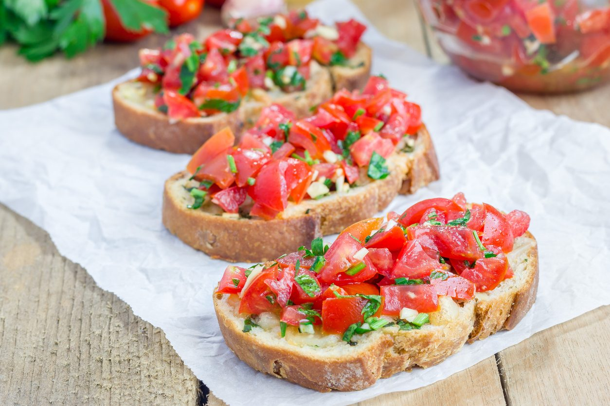
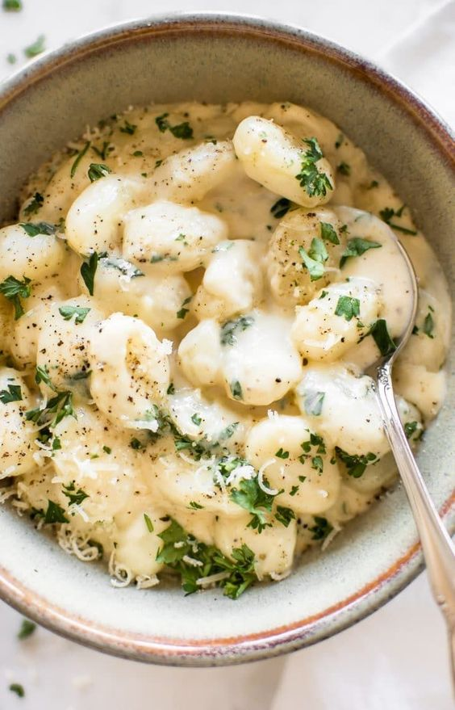
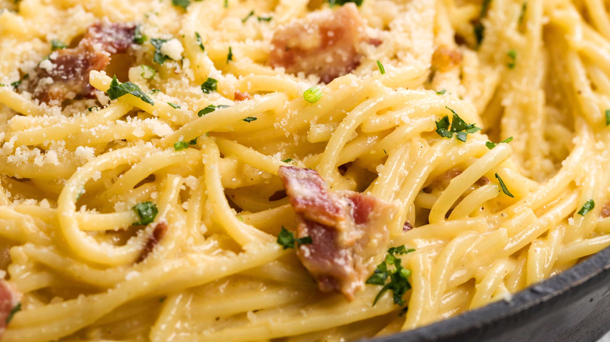

I have never been to Italy but I have been eating Italian since I was a kid and have had hundreds of dishes from different resturants and I have developed an opinion on Italian dishes.
Bruschetta is a appetizer that is a piece of breat with pesto, olive oil and vinigar spread on top. Then on top of that is freshly chopped tomatoes and a cheese(varys on location). It has a very unique taste and is delicous. It usually comes in servings of 3-4 pieces so it is perfect to share with family or date. I almost always get it when getting Italian and if you are new to italian I think you will love it. It is a vegetarian option and can be vegan if you remove the cheese. 
Gnocchi is a main dish of pasta that is made from potatoes and is part pasta. It can be served with almost any sauce on top and is delicouse with many. My personal recomendation is alfreado Gnocchi it is delicouse and a thick entree. The taste varys on sauce but the consistancy is interesting. It is soft and you bite through it and it melts in your mouth in a way. Great option for main dish and is a vegetarion option. 
Carbonara is also a main dish of pasta but it contrasts a lot from gnocchi. Carbonera is made of thick long noodles almost like spagetti but thicker. It has a great sauce and it comes with mushrooms bacon and peas in it. It is an amazing option for a main entree and it is a pasta that is very basic and almost anyone could like it. It is not vegan or vegetarion though so look for a different option for main dish.b 
return link